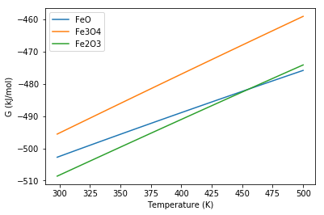
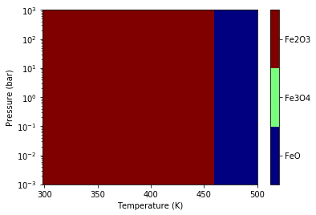

Phase Diagram¶
In this example, we will generate a 1D and 2D phase diagram for FeOx species.
Topics Covered¶
- Create
NasaandStatMechobjects - Initialize
Reactionobjects to describe the formation reaction of FeOx species - Generate a 1D phase diagram by varying T
- Generate a 2D phase diagram by varying T and P
- Save the
PhaseDiagramobject as aJSONfile
Create Species for Phase Diagram¶
We will be considering three iron oxide species: FeO, Fe3O4, and Fe2O3.
All the empirical data (from NIST) will be converted to Nasa
objects. O2, on the other hand, will be a StatMech object so that it
will be dependent on pressure.
If you are unfamiliar with initializing objects using experimental data, see the Experimental to Empirical example.
In [1]:
from pprint import pprint
import numpy as np
from ase.build import molecule
from pMuTT.empirical.nasa import Nasa
from pMuTT.statmech import StatMech, presets
# Temperature (in K) corresponding to standard enthalpy
# and standard entropy
T_ref = 298.
# Temperatures (in K) corresponding to heat capacity
T = np.array([298., 300., 305., 310., 315., 320., 325., 330.,
335., 340., 345., 350., 355., 360., 365., 370.,
375., 380., 385., 390., 395., 400., 405., 410.,
415., 420., 425., 430., 435., 440., 445., 450.,
455., 460., 465., 470., 475., 480., 485., 490.,
495., 500])
# Fe data
CpoR_Fe = np.array([3.018129466, 3.023626079, 3.037347372,
3.051041872, 3.06471211, 3.078360492,
3.091989304, 3.105600726, 3.119196843,
3.13277965, 3.14635106, 3.159912915,
3.173466988, 3.187014988, 3.20055857,
3.214099334, 3.227638833, 3.241178576,
3.25472003, 3.268264625, 3.281813753,
3.295368778, 3.308931031, 3.322501816,
3.336082411, 3.34967407, 3.363278024,
3.376895484, 3.390527642, 3.404175671,
3.417840728, 3.431523954, 3.445226474,
3.458949401, 3.472693834, 3.486460862,
3.500251559, 3.514066993, 3.527908217,
3.54177628, 3.555672217, 3.569597059])
HoRT_Fe = 0.
SoR_Fe = 3.284428696
# FeO data
CpoR_FeO = np.array([6.004980757, 6.010160937, 6.022964518,
6.035567503, 6.047980643, 6.060213866,
6.072276342, 6.084176563, 6.095922395,
6.107521136, 6.118979564, 6.130303982,
6.141500259, 6.152573863, 6.163529897,
6.174373123, 6.185107998, 6.195738688,
6.206269099, 6.216702891, 6.227043498,
6.237294147, 6.247457872, 6.257537527,
6.267535799, 6.277455222, 6.287298187,
6.297066948, 6.306763637, 6.31639027,
6.325948754, 6.335440896, 6.344868406,
6.354232908, 6.363535942, 6.372778972,
6.381963388, 6.391090513, 6.400161605,
6.409177863, 6.418140429, 6.427050393])
HoRT_FeO = -109.7966298
SoR_FeO = 7.303137557
# Fe3O4 data
CpoR_Fe3O4 = np.array([17.70205065, 17.76448405, 17.91908664,
18.07168569, 18.2224119, 18.37138586,
18.51871897, 18.66451424, 18.80886707,
18.95186592, 19.09359287, 19.2341242,
19.37353085, 19.5118789, 19.64922991,
19.78564135, 19.92116686, 20.0558566,
20.18975749, 20.32291349, 20.45536576,
20.58715296, 20.71831135, 20.848875,
20.97887597, 21.10834441, 21.23730872,
21.36579565, 21.49383045, 21.62143694,
21.7486376, 21.8754537, 22.00190534,
22.12801153, 22.25379029, 22.37925867,
22.50443285, 22.62932817, 22.75395919,
22.87833973, 23.00248293, 23.12640128])
HoRT_Fe3O4 = -452.3912981
SoR_Fe3O4 = 17.46008698
# Fe2O3 data
CpoR_Fe2O3 = np.array([12.47757489, 12.52697445, 12.64787689,
12.7652535, 12.87931824, 12.99026871,
13.09828757, 13.20354395, 13.3061946,
13.40638501, 13.50425036, 13.59991643,
13.69350035, 13.78511133, 13.87485131,
13.96281555, 14.04909315, 14.13376754,
14.21691692, 14.29861465, 14.37892962,
14.45792659, 14.53566649, 14.6122067,
14.68760129, 14.76190128, 14.83515483,
14.90740747, 14.97870223, 15.04907987,
15.11857898, 15.18723616, 15.25508613,
15.32216185, 15.38849466, 15.45411434,
15.51904926, 15.58332641, 15.64697155,
15.71000921, 15.77246282, 15.83435478])
HoRT_Fe2O3 = -333.1719719
SoR_Fe2O3 = 10.49736076
O2 = StatMech(vib_wavenumbers=np.array([1580.2]),
potentialenergy=-0.1879339246281043,
spin=1.,
symmetrynumber=2,
atoms=molecule('O2'),
**presets['idealgas'])
species = {
'Fe': Nasa.from_data(name='Fe', T=T, CpoR=CpoR_Fe, T_ref=T_ref,
HoRT_ref=HoRT_Fe, SoR_ref=SoR_Fe),
'FeO': Nasa.from_data(name='FeO', T=T, CpoR=CpoR_FeO, T_ref=T_ref,
HoRT_ref=HoRT_FeO, SoR_ref=SoR_FeO),
'Fe3O4': Nasa.from_data(name='Fe3O4', T=T, CpoR=CpoR_Fe3O4, T_ref=T_ref,
HoRT_ref=HoRT_Fe3O4, SoR_ref=SoR_Fe3O4),
'Fe2O3': Nasa.from_data(name='Fe2O3', T=T, CpoR=CpoR_Fe2O3, T_ref=T_ref,
HoRT_ref=HoRT_Fe2O3, SoR_ref=SoR_Fe2O3),
'O2': O2,
}
# (Optional) Print the species dictionary
pprint(species)
{'Fe': <pMuTT.empirical.nasa.Nasa object at 0x000001F67D499A20>,
'Fe2O3': <pMuTT.empirical.nasa.Nasa object at 0x000001F67D499978>,
'Fe3O4': <pMuTT.empirical.nasa.Nasa object at 0x000001F67D499E48>,
'FeO': <pMuTT.empirical.nasa.Nasa object at 0x000001F67D499AC8>,
'O2': <pMuTT.statmech.StatMech object at 0x000001F67D499F98>}
Create Reactions for Phase Diagram¶
The reactions will be initialized and put in a list. Notice that the stiochiometric coefficient of O2 in all reactions is 1 to ensure consistency. If you are unfamiliar with initializing reactions, see the reactions example.
In [2]:
from pMuTT.reaction import Reaction
reactions = [
Reaction.from_string(reaction_str='2Fe+O2=2FeO', species=species),
Reaction.from_string(reaction_str='{}Fe+O2={}Fe2O3'.format(4./3., 2./3.),
species=species),
Reaction.from_string(reaction_str='1.5Fe+O2=0.5Fe3O4', species=species)
]
Create PhaseDiagram Object¶
Now we have everything we need to create the PhaseDiagram object.
In [3]:
from pMuTT.reaction.phasediagram import PhaseDiagram
phase_diagram = PhaseDiagram(reactions=reactions)
Creating a 1D Phase Diagram¶
In [4]:
from matplotlib import pyplot as plt
fig1, ax1 = phase_diagram.plot_1D(x_name='T', x_values=T, P=1., G_units='kJ/mol')
'''Plotting adjustments'''
# Add custom legend
ax1.legend(labels=['FeO', 'Fe3O4', 'Fe2O3'])
# Add custom x axis label
ax1.set_xlabel('Temperature (K)')
Out[4]:
Text(0.5, 0, 'Temperature (K)')

Creating a 2D Phase Diagram¶
In [5]:
# Generate Pressure range
P = np.logspace(-3, 3)
fig3, ax3, c3, cbar3 = phase_diagram.plot_2D(x1_name='T', x1_values=T,
x2_name='P', x2_values=P,
G_units='kJ/mol')
'''Plotting adjustments'''
# Add custom axis labels
ax3.set_xlabel('Temperature (K)')
ax3.set_ylabel('Pressure (bar)')
# Change y axis to log scale
ax3.set_yscale('log')
# Add custom colors
plt.set_cmap('jet')
# Set custom labels on colorbar
cbar3.ax.set_yticklabels(['FeO', 'Fe3O4', 'Fe2O3'])
Out[5]:
[Text(1, 0, 'FeO'), Text(1, 0, 'Fe3O4'), Text(1, 0, 'Fe2O3')]

In [ ]: